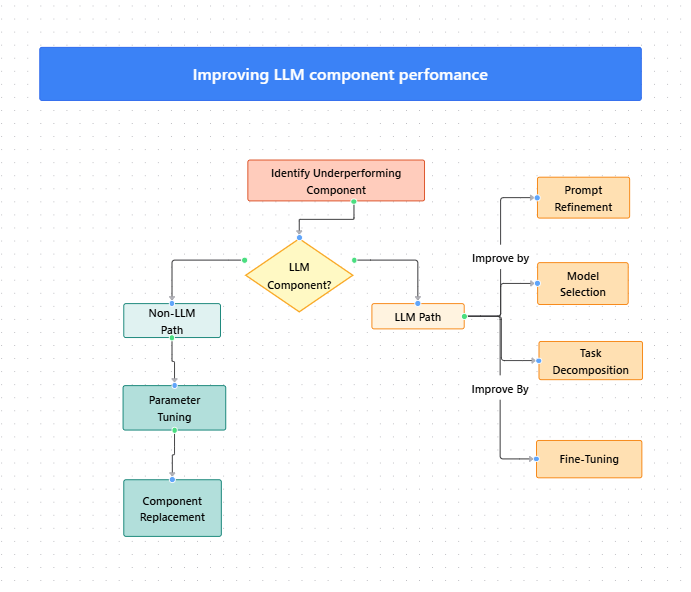

Module 4 — Episode 5
Training:Agentic AI Training
🎯 Learning Objectives
By the end of this episode, you will be able to:
- ✅ Identify and tune parameters in both LLM-based and non-LLM-based components of agentic workflows
- ✅ Apply structured techniques to improve model performance through prompting, decomposition, and fine-tuning
- ✅ Develop intuition for selecting and evaluating large language models for specific tasks
🧭 Overview
This episode explores practical techniques for improving components within agentic AI workflows.
It covers both non-LLM-based components (like retrieval systems or search engines) and LLM-based components (prompting, model selection, fine-tuning).
You’ll also learn how to build intuition for choosing the right model for your task — a key skill for developing efficient, high-performing agentic systems.
🧱 Prerequisites
Readers should already understand:
- Basics of agentic AI workflows and their component structure
- Concepts from previous episodes on workflow evaluation and debugging
- Familiarity with LLM prompting and Retrieval-Augmented Generation (RAG)
🔑 Core Concepts
- Component Optimization – The process of improving individual workflow components to enhance overall system performance.
- Hyperparameter Tuning – Adjusting configuration parameters (e.g., similarity thresholds, chunk sizes, detection sensitivities) to optimize non-LLM components.
- Prompt Engineering – Crafting and refining LLM instructions, examples, and structure to improve response quality and consistency.
- Few-Shot Prompting – Providing examples within prompts to guide model behavior more effectively.
- Model Intuition – Developing a sense for which models perform best for specific tasks based on experimentation and observation.
🖼 Visual Explanation
 Caption:This diagram illustrates pathways for optimizing workflow components: parameter tuning and replacement for non-LLM components, and prompt refinement, model selection, decomposition, and fine-tuning for LLM-based components.
⚙️ Technical Breakdown
How It Works
1. Identify the underperforming component — Determine whether the issue lies in a retrieval engine, model output, or another subsystem.
2. Non-LLM Components- Tune hyperparameters (e.g., retrieval similarity threshold, search result count, detection sensitivity).
- Replace components (e.g., swap retrieval engines or ML models).
3. LLM Components- Refine prompts by adding clarity or examples (few-shot prompting).
- Try alternative models using tools like AI Suite to evaluate performance.
- Decompose complex tasks into smaller, sequential steps (e.g., generate → reflect).
- Fine-tune the model if incremental improvements are needed and justified by cost.
4. Evaluate Results — Use component-level or end-to-end evals to measure improvement.
Why It Works
- Parameter tuning aligns component behavior with the specific data or workflow context.
- Prompt optimization leverages the LLM’s contextual reasoning capabilities more effectively.
- Model experimentation exposes performance differences across architectures and training data.
- Task decomposition simplifies complex reasoning chains, improving consistency.
- Fine-tuning embeds domain-specific knowledge directly into model weights for maximum accuracy.
When To Use It
✅ Use these techniques when:
- A workflow component consistently produces low-quality or inconsistent results.
- You are preparing an agentic system for production and need higher reliability or accuracy.
- You want to compare cost, latency, and performance trade-offs across models.
❌ Avoid when:
- The workflow is still in early prototyping (fine-tuning may be premature).
- You lack sufficient evaluation metrics to measure improvement.
Trade-offs & Limitations
- Complexity – Fine-tuning requires significant data preparation and infrastructure.
- Cost – Larger models and multiple eval runs can increase operational expense.
- Scalability – Highly tuned or fine-tuned components may not generalize across tasks.
- Maintainability – Frequent model changes can complicate version control and testing.
Performance Considerations
- Latency – Larger or chained models may increase response time.
- Cost Optimization – Use smaller models for simpler tasks when possible.
- Caching & Reuse – Cache results of stable components to reduce repeated computation.
- Eval Efficiency – Automate model evaluations to quickly compare performance and cost.
💻 Code Examples
Minimal Example: Comparing Models for PII Redaction
from ai_suite import LLM, evaluate
# Define two models to test
models = [
LLM(provider="openai", model="gpt-4-turbo"),
LLM(provider="meta", model="llama-3.1-8b")
]
prompt = """
Identify and redact all personally identifiable information (PII) in the text below.
Return only the redacted text.
Text:
"On July 14th, 2023, Jessica Alvarez with SSN 123-45-6789 called support."
"""
# Evaluate both models
for model in models:
output = model.generate(prompt)
print(f"Model: {model.model_name}\n{output}\n")
# Use evals to measure which model performs better for instruction following
results = evaluate(models, task="pii_redaction")
print(results.summary())
Example: Task Decomposition
# Step 1: Generation
summary = llm.generate("Summarize the following call transcript...")
# Step 2: Reflection
reviewed_summary = llm.generate(f"Check the following summary for missing key details:\n{summary}")
# Combine results
final_summary = f"{summary}\n\nReviewed Version:\n{reviewed_summary}"
🧠 Pro Tip
Regularly read and analyze other developers’ prompts to understand best practices.
Experimenting with multiple models and maintaining your own set of “prompt evals” will sharpen your intuition for model selection and improve your workflow design efficiency.
🚀 Next Steps
In the next episode, we’ll explore methods to optimize cost and latency in agentic workflows — ensuring that your high-quality system also runs efficiently at scale.